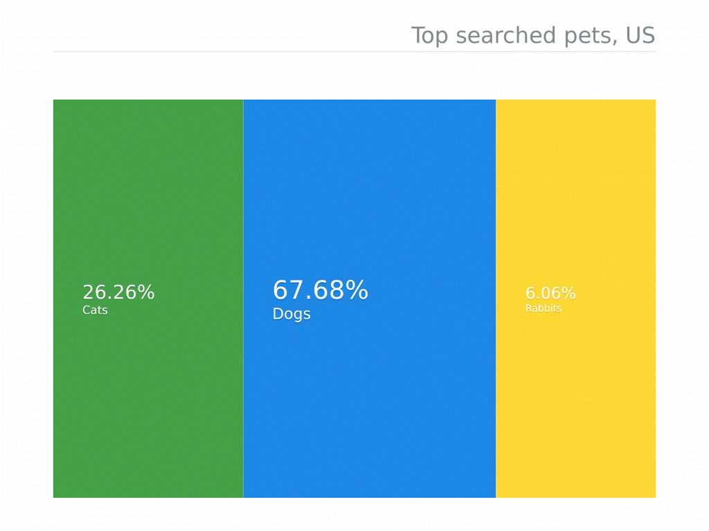

Space-themed site
The first website submission for the semester, where I will propose a simple sketch for a site featuring 5 sections; this one for the Homepage, Blog, Data-Visualisation, Data-Art , and Design Section
Blog Section
This section will house the various blogposts that will be done this semester. For now I will add one that we've already done a few weeks prior
Overview of Data Visualisation

This is the first blog post for the second semester of interactive media and has us examine and perform a close reading of the chapter, Overview of Data Visualization, the second in the text, Embodying Data: Chinese Aesthetics, Interactive Visualization, and Gaming Technologies, by author Qi Li. The following will be a summary of this chapter of the reading as I understood it.
The text talks about the concept of data visualization, its origins, and where it was and is applied in ancient and modern societies. Going back as far as the 2nd Century, it has roots in the form olds drawings and manual recollections of information, through with the advent of computer processing and graphical software, technology has advanced the field data visualisation, allowing individuals to collect, analyse, and manipulate much larger volumes of information, and with much more accuracy (Li, 2020:16). Li outlines some key advantages of this practice, such as the ability to represent large volumes of date, indeniying emergent properties, understanding both alrge and small scale data, qaulity control, idenitifyign problems, and constructing sound hypothesies.
This often takes the form of visual, graphical imagery, helping to make sound decisions from the visual representations of which Li says the following in relation to that: “The success of data visualization is due to the soundness of the basic idea behind it: using computer-generated images to gain insight and knowledge from data and its inherent patterns and relationships” (Li, 2020:18).
Li cites several sources for what data visualization has been defined as for the time it has been studied, though I have chosen to condense it into the following: Data visualization is a process that involves transforming data into a visual or sonic form using computer technology. It involves the exchange of information between the sender, receiver, and message, utilizing visual perception abilities to amplify cognition. It is a key element in identifying patterns within a graphic through exploring and analyzing data. “understanding real number lines, time, measurement, and estimation, as well as ratio concepts like fractions, proportions, percentages, and probabilities," Li writes (Li, 2020:19). She further classes this into two types: information and scientific visualization, with the former representing abstract dates and the latter representing physical data. Both are done via an attempt at conveying graphical data into a visual form. Li goes at length describing traditional means of data visualization, though I will only outline them for the purposes of this text, starting with the earliest mode, trees.
Tree diagrams hierarchical structure provides a powerful tool for organizing, rationalizing, and illustrating information patterns. The visual metaphor of the tree is used to represent a network of nodes within its branches in data visualization. Some offshoots of this are treemap diagrams, the space-tree, and star-tree diagram, each of course being better suited for representing different data and information (Li, 2020:26).
Following that are simply maps. Maps are graphical depictions that highlight relationships between elements of space, such as objects or regions. The most conventional use is geographic maps, which are used to help people define, explain, and navigate through the world. For instance, road maps, aeronautical and nautical charts, railway or subway network maps, and hiking or bicycling maps Maps were designed and fixed on paper or durable materials. The invention of computer technology has allowed for the development of dynamic and interactive maps. interactive functions, such as zooming in and out (Li, 2020:29).
Next are the charts. Useful for representing data in line, bar, or slice forms, charts traditionally represent data in the form of a table, graph, or diagram. This form is useful in representing quantitative data that conveys information about sizes or dimensions, and more specifically, in representing correlation and regression in graphic form (Li, 2020:30).
Tables are another common form of visualization and do so by displaying data within various fields, allowing for efficient comparative data on categorical objects. Featuring rows and columns, they represent data in two dimensions, with quantitative data placed in the squares at the intersection of the row and column. Advantages of this include conveying precise numerical values, aiding viewers in making comparisons, and organizing information where graphing might not be appropriate. An offshoot of that are timetables, a type of table used for referring to and managing tools for scheduled events, tasks, actions, or appointments. They organize data into chronological or alphabetical order, allowing for quicker referencing. Timetables are basic ways to show arrival and departure times for transportation, making them ideal tools for individual time management (Li, 2020:32).
Next are diagrams, a useful tool for business-related analysis that illustrates information flow through rectangles and lines. Before computer technology, hand-drawn graphs were used, but handling large amounts of data like internet data flow was not so simple. Li, 2020:32). Graphs, similar to diagrams, help perceive and recognize broad features of data or information, providing insight into the data. (Li, 2020:35). Some less intuitive but nonetheless useful forms are waveforms, which represent the shape of time related to various quantities of data; simulations, which enable observers to understand and describe sometimes unique and exotic natural phenomena; and volume visualization, which creates a graphical representation of data sets on 3D grids. These are multidimensional arrays of scalar and vector data, typically shown on lattice structures representing values in 3D environments (Li, 2020:40).
Li concludes by once again reiterating the important practice and role that data visualization has in society and human and technological interaction, with various modes of data visualization aiding in creating readability, recognizability, and meaning for processed information.
Data Visualisation Section
This portion of the site will be dedicated for the data visualisation section once that segment as been completed.

Data Art Section
This portion of the site will be dedicated for the data art section once that segment as been completed.
